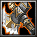

- 主要屬性 力量
攻擊範圍 128
- 基礎護甲 7
基礎攻速 1.7
- 基礎攻擊 115 - 133
基礎跑速 310
島津家17代當主，貴久的次男。粉碎伊東、大友兩家，讓島津家邁向繁榮的家中猛將。於朝鮮派兵時大破明朝大軍，譽為「鬼石曼子」。
啟動之後，可以增加(15/30/45/60)攻擊傷害、(2/3/4/5)護甲以及(200/300/400/500)額外生命值 和魔法免疫能力。持續13秒。
-

-
E
震地斧
-
115/135/155/175
-
16/15/14/13
敲擊地面，對附近的敵軍造成(200/300/400/500)傷害並且減緩(9/18/27/36)%移動速度和65%攻擊速度。持續6秒。
冷卻時間隨技能等級提升降低。
在攻擊時有31%機率對敵人額外造成(100/180/260/340)傷害，並會將敵人擊昏0.4秒，不會失誤。
無視魔法免疫造成傷害，但魔法免疫單位不會被擊昏。
對指定的方向丟出不動戰錘，不動戰錘將會每0.45秒對周圍敵人丟出暈擊，造成(90/140/190)傷害並且震昏(0.40/0.45/0.50)秒。不動戰錘可以存在9秒。
學習等級為6/12/18。
永久性的提升(3/6/9/12)靈活、智慧和力量。